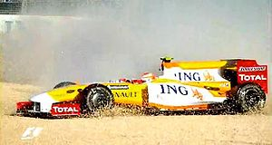

NASCAR
 De: La Frikipedia, la enciclopedia extremadamente seria.
De: La Frikipedia, la enciclopedia extremadamente seria.
| De la serie deportes para todos:
|
| MASCAR
|
|
|
| Número de practicantes
|
Algún zoquete que se le ocurra girar en círculo a 300 km/h
|
| ¿Deporte Olímpico?
|
Más quisieras...
|
| Campeonatos
|
La principal, Sprint Cup (a partir de ahora), Nationwide y Camping World (para los novatos manazas). Tienen divisiones regionales e internacionales en Canadá y México
|
| ¿Donde se practica?
|
Si es en Estados Hundidos, mejor que mejor
|
| ¿Control anti-dopping?
|
Si, caso de Jeremy Mayfield.
|
| Riesgo de muerte
|
Altísimo, aunque la seguridad es buena
|
| Árbitro
|
Pa qué, si hacen menos que los funcionarios
|
| Hinchas
|
A prueba de mareo
|
NASCAR son las siglas de Nabos Asociados por Chocar Autos Raros. Bueno, esta es la idea de este deporte.
 Este... también... ¡¡¡¡¡NOOOOOOOOOOO!!!!!
Este deporte consta de como 100 cosas:
43 coches pintados de muchos colores, de 500 metros de eslora, con un número más grande que la edad de tu abuelita y con una velocidad en algunos circuitos de 300000000 Kph.
Son considerados las mejores carreras de coches que hay en el momento, aunque solo cuando hay choques de mas de 5 coches, es decir, siempre.
43 conductores lo suficientemente carrera, se lleva más o menos 3/4 de millón de dólares; y , en vez de quedárselos, se los da a los mecánicos para que le compren otra tartana, puesto que ha quedado hecho un desastre.
Los circuitos NASCAR
Pues aunque hay bastantes circuitos, todos se pueden clasificar en 6 tipos:
- Oval clásico: El de toda la vida, con forma de 0 para que los pilotos vayan haciendo brazo durante la carrera. Son el caso de pistas como Bristol, New Hampshire, Dover, en Martinsville puedes ver muchas hostias(Estas son pistas de menos de una milla), Darlington mejor conocida como la dama de negro y Homestead (Estas son de milla y media).
- Oval triangular: la recta de meta está partida en 2 para que los del exterior hagan metros y nunca ganen. La unica pista que tiene esta forma es Poco-no.
- Triovalo: Sin recta de meta (es una curva, a excepción de Phoenix) que le da forma de triangulo, es una putada porque casi no paras de girar. En estas pistas puedes ver muchas cascadas de coches. Hay Triovalos cortos (Richmond y Phoenix), de milla y media (Atlanta, Texas, Charlotte, Chicagoland, Kansas
de girar a al izquierda, Kentucky y Las Vergas Vegas), de dos millas (Californication California y Michigan) y los superspeedways de 2.6 millas donde puede ver un Demolition Derby a gran velocidad y carreras emocionantes(Daytona y Talladega).
- Oval rectangular: El de Indianapolis, una de las mayores gilipolleces: partir las curvas en 2 poniendo una mierdarecta tocahuevos
- Circuito europeo: No es un oval así que suele haber mucho piño en las curvas a derecha (sólo giran en esa dirección 2 veces al año en Sonoma y Watkins Glenn)
Las categorías NASCAR
Pues por si no fuese suficiente coñazo ver a 43 coches dando vueltas en un circuito con forma de 0, D o rectangular, los de la NASCAR (en realidad, Asociación nacional para carreras de coches stock, lo otro era coña) se inventaron 2 carreras aún más sangrientas:
- La Nationwide o como sea (depende del patrocinador): inventada para que los catalanes compitiesen (es como la Copa pero más barata)
- La de camionetas Camping World: que es la de menos nivel de habilidad pero más sangrienta (youtubead Geoff Bodine Daytona crash y veréis un piñaco guapo y no mortal que deja pequeño lo de Kubica)
Coche de seguridad (pace car)
Cuando hay muchos locos circulando por la pista un coche pintado más prolijo que los otros, con luces de policía en el techo, y sin número sale a la pista con una velocidad promedio de entre 40 y 75 Kph y se queda en ella por entre 3 y las vueltas que hagan falta. Los pilotos reducen la velocidad a 50 Kph, pero nadie se da cuenta porque ellos lo expresan en millas por hora (algo que los que no somos yonquis no entendemos).
Mientras el pace car da las vueltas, los pilotos entran a los boxes a cambiar todo y para no dormirse del aburrimiento.
Las paradas en boxes
Como son tan cafres los de la NASCAR en vez de cambiar todos los neumáticos a la vez, prefieren ir de 2 en 2 para gastarse menos dinero y ahorrar para dominar el mundo.
Además, usan ex-jugadores de fútbol americano ya que piensan menos y no se preguntan la gilipollez de formato de los pit-stops.
Las banderas
| "Vandera" |
¿Qué carajo es esto?
|
 |
Bandera a cuadros: Quiere decir que el que pasa primero la línea de final (con el auto andando) gana la carrera. Es necesario que tenga un estado de locura ALTO.
|
 |
Bandera amarilla: Significa que hay muchos locos en la pista y es necesario que entre el coche de seguridad.
|
 |
Bandera verde: Esta bandera quiere decir que los pilotos pueden empezar o pueden volver a chocarse entre sí.
|
| |
Bandera negra: Al conductor al que se la muestra está chocando mucho a todos y debe abandonar la pista para bajar su estado de locura.
|
| |
Bandera Azul-Naranja: Quiere decir que un conductor con estado de locura bajo debe dejar pasar a uno con estado de locura alto.
|
| |
Bandera blanca: Te indica que ya pasaron 499 vueltas
|
La Chase for the cup o Playoff final
Pues como el mierda sistema de puntos y la enorme cantidad de carreras por temporada (de 30 p'arriba) hace que al final de año los pilotos se puedan hacer hasta gayolas en las competiciones se decidieron a crear un sistema que después de 26 carreras, pasen a puntuar sólo los 12 corredores que más sangre hayan acumulado en el parachoques pero igualmente compiten todos los supervivientes así que no es que tenga mucho sentido.
Hostias más comunes
- Al muro...: Simplemente se derrapan y se van
a tomar por culo contra el muro.
- Big One (El Grande): Uno
la lía se descontrola y se pega contra otro y crea un montón de zoquetes furiosos pilotos fuera de carrera.
- A volar...: es como el del muro, con la diferencia de que aquí el coche queda
de culo al revés o agarra pasto y se revuelca en el aire.
Marcas
ADVERTENCIA: Si eres fanatico del anime (más que todo de Naruto), y vas a ver Nascar para alejarte del molesto relleno de la serie, mira una carrera de Nascar en cualquiera de sus divisiones nacionales (sobre todo Nationwide y la Camping World) y veras que no te has escapado del todo del maldito relleno, mejor conocido en Nascar como Start and Park para no alejar a fanaticos otakus.
- Chevrolet, el favorito de todos. Usan Chevy los equipos de
Jimi Hendrix Hendrick Motorsports, Stewart-AssHaas Racing, Ricardo Niño Richard Childress Racing, Earnhardt-Ganassi Racing, Phoenix Racing, entre otros equipos de relleno.
- Los
putos Ford, muy pocos los quieren, Usan autos Ford los equipos de Roooouuuchhh!!!! Roush-Fenway Racing, Ricardo Petardo Richard Petty Motorsports, Germancito Germain Racing, el patetico equipo de Front Row Motorsports, Penske Racing y dos que son de relleno.
- Los
Poyota Toyota está de moda. Sin embargo los Fanboys no les gusta lo extranjero, ya que están encariñados con Chevrolet. Los equipos de Toyota son el Joe Gibbs Racing (El ex-coach de la NFL), Miguel Zapatero Michael Waltrip Racing, el Equipo ese de las hamburgesas Burger King Racing , el patetico equipo de Joe Nemechek (NEMCO), el Incesto Incepción Motorsports y el Robinson-Blackeney Racing con sus Judíos (Estos tres ultimos son relleno).
Semidioses de este deporte
- Dale Earnhardt Sr (R.I.P.): 7 copas (1980, 1986, 1987, 1990, 1991, 1993, 1994), es el máximo idolo y dios de la serie. Se lo cargó otro piloto en la 1ª carrera de 2001 en Daytona.
Ricardo Petardo Richard Petty (director de equipo): 7 copas (1964, 1967 ganando 27 carreras, 1971, 1972, 1974, 1975, 1979), viene de familia corredora pero, después de él, los Petty son pura M*****.
- Jimmie Johnson (actual) : 6 copas, todas seguidas (2006, 2007, 2008, 2009, 2010) excepto la del 2013
- Jeff Gordon (actual) : 4 copas, dueño a medias con Rick Hendrick (dueño de su coche) del coche de Dale Earnhardt Jr y Jimmie Johnson y descubridor del talento
en la cama de este último
- Tony Stewart (actual) : 3 copas (2002, 2005, 2011) , Dueño de su propio equipo y ha logrado ser el heroe de la categoría al derrotar a Jimmie Johnson y a Carl Edwards (por manejar un Puto Ford)
- Cale Yarborough (vivo): 1º hombre en conseguir 3 copas del tirón (1976, 1977, 1978), se agarro a hostias con los hermanos Allison en Daytona 500 en 1978.
- David Pearson (vivo): El Jinchuriki de Nascar, pues es poseedor de la zorra
de nueve colas plateada.
- Darrell Waltrip (vivo): Tres Copas (1981, 1982, 1985), apareció en Cars y es comentarista en Fox y cuando comienza una carrera grita como loco diciendo en un lenguaje extraterrestre "¡¡¡¡¡Boogity, Boogity, Boogity, Let's go racing boys!!!!!".
Pilotos actuales de Nascar
- Nº 24 Jeff
Porno Gordon alias Robin (el joven maravilla): El favorito de los fanboys 4 copas, después de 15 años ganando algo, en 2008 no ganó carreras, pero en 2009 ganó en Texas, en 2010 la enbarró otra vez y no ganó nada, pero en 2011 volvió a ganar, su equipo es Hendrick Motorsports y sus patrocinadores son Dupont y Drive to the End Hunger.
- Nº 48
Jaimito Jimmie Johnson alias Superman en calzoncillos : 2º hombre en conseguir 3 copas del tirón (de 2006 a 2008) y luego ganaria 2 más este amigo de Bush y lo bueno es que el propietario del coche es su amigo pero rival en pista, Jeff Gordon. Nadie sabe qué pasará dentro del tallercito de Jeff y Jimmie cuando está cerrado...Para más información, busca en Youtube "Gordon is Gay". Corre para Hendrick y sus patrocinadores son Lowe´s y Kobalt Tools
- Nº 42 Juan Pablo Montoya alias Chancho, Chibchombiano, Destructor Montoyasaurio Rex, Juanderful o Juan Pis: Ex F1 que no se dejó sobornar de la (MA)FIA, tuvo un inicio dificil pero luego se recuperó y peleo el título en 2009. Sus maniobras siguen siendo iguales a las de Takuma Sato[1]. Corre para el Earnhardt-Ganna-NO Racing y su patrocinador es un blanco para disparar (Target)
- Nº 18 Kyle
Broflowski Busch alias Judio de mierda, Judio Bullicioso, Rowdy o Arbusto: Campeón 2009 de Nationwide, pudo ganar 3 carreras de las 3 divisiones en un fin de semana en Bristol gracias a que sacó a medio mundo su gran talento. Antes era un vengador comparable con Sasuke Uchiha, pero Kyle se casó y le dejo el trabajo a otro, sin embargo regresó y se cargó a Ron Hornaday en la carrera de camionetas. Se destaca por ganar toda carrera que encuentra y seguir odiando a Cartman. Hizo pistolita en Texas [2]. Corre para Joe Gibbs (ex Coach de la NFL) y sus patrocinadores son m&m´s y Monster Energy (en Nationwide).
- Nº 51 Kurt
Cobain Busch alias pito corto o tambien Duende Doble: Campeón 2004 de la Sprint Cup, el primero con el formato del Chase, es el hermano mayor de Kyle y en su infancia le quito el carrito favorito de Kyle y éste juró venganza. Es una amenaza para todo periodista de ESPN que se encuentre, y por esto fue despedido del equipo Penske. Corre para Phoenix Racing su patrocinador es Tag Heuer.
- Nº 99 Carl Edwards(Traduzcase Carlitos Eduardo)alias primo de los cojones: Campeón 2007 de Nationwide y dos veces subcampeón en 2008 y 2011 (por manejar un Ford), se destaca por sus saltos mortales 1 estilo Power Ranger, se transforma en uno para acabar con Brad Keselowski , es el primo oculto de Juanito Meriendas. Corre para Roouchh su patrocinador es Fastenal y Kelozz
- Nº 14 Tony (no el del cereal) Stewart alias Smoke, eliluminado7, Eric Cartman, Gordo de la lotería o Garfield (cuando corría para Joe Gibbs): Campeón 2002, 2005 y 2011 de la Sprint Cup, dueño de su propio equipo. Se destaca por ser gordo y todavía caber en un auto de carreras, luego hizo un intercambio con el negrete ese y lo hizo mucho mejor que Luisito, aunque le costó entrar al auto luego de comer muchas hambuergesas en Burger King. Su ultimo logro fue acabar con el reinado de Superman y ser el heroe. Su gordura hace intimidar a todos sus rivales. Su patrocinador es
Sin Office Depot y Mobil 1.
- Nº 11 Denny Hamlin alias FedEx Man o Farsante: Corredor que estuvo cerca de darle fin al reinado Gay de Jaimito Johnson en 2010, en sus ratos libres es empacador de FedEx, enemigo acerrimo de Brad
Putalowski Keselowski y para desquitarse aprendió de su amigo Kyle 2.Corre para Joe Gibbs y su patrocinador es FedEx.
- Nº 2 Brad
Putalowski Keselowski alias Special K (es un niño especial) o Krashelowski: Piloto del auto Miller Lite (se embriaga todos los dias con eso antes de cada carrera). Campeón 2010 de Nationwide y de Sprint Cup en 2012. Se destaca por chocar sus autos en Nationwide y ser el enemigo del Empacador de FedEx, del judio de mierda, del Chibchombiano, del Primo Power Ranger y por destruir todo a su paso. Corre para el capitán Jack Sparrow Roger Penske. Sus patrocinadores son Miller Lite y Discount Tire(en Nationwide).
- Nº 29 Kevin
HarvickVaporub Harvick alias The closet closer, Happy (pero en donde?)o Terminator: 2 veces campeón de la Mierdowide Nationwide, se destaca por las peleas con el Subnormal de la cinta (Greg Biffle), con el Barón Rojo (Montoya), con el Judio Bullicioso, con el rebanada de pan y con sus mecánicos en Nationwide. Su esposa tiene el overol en la familia. Corre para Richard Childrens (niños) Racing y su patrocinador es Budweiser.
- Nº 20
Jorge te lo agarro Joey Logano alias Comapan Rebanada de pan: Es el piloto más joven en ganar una carrera en la serie. Cuando hace pataletas, acude a su papi a que lo defienda. Se dedica a poner a prueba de choque los autos. Ahora que tiene a Chuck Norris como jefe de mecánicos, debe ganar todas las carreras. Corre para Penske Racing y su patrocinador es Penezoil Pennzoil
- Nº 27 Paul Menard (Traduzcase Pablo
Escobar Menares) alias El Ranger Amarillo Fluorescente: Este piloto se dedica a correr y aportar dinero. Trae pasta gracias a que su padre lo auspicia. Solo tiene una victoria y la logró en Indianapolis. Corre para Richard niños malcriados Racing y es patrocinado por la compañía de su papi Menards
- Nº 56 Martin Truex Jr. alias Martinez Truex Jr.:Este piloto tiene la peor maldita suerte en este maldito mundo (no lo digo yo, lo dice el), ya que cada vez que hace una buena carrera lo chocan o sus incompetentes mecanicos hacen una mala labor. Ya que nació en Mayetta (New Jersey), ha aparecido en Jersey Shore donde sacia su rabia peleando con las
putas amigas con las que convive y antes de cada carrera se va de fiesta. Corre para Michael Waltrip y su patrocinador es Mapa Napa.
- Nº 39 Ryan
Neumatico Newman alias Cohete Marine, La Morcilla o Butifarra Parlante o Cerdo de la Armada: Este simple marrano piloto se destaca por no hacer nada y lograr buenos resultados. Igual que su jefe, le cuesta entrar a sus autos debido a su gordura. Ha tenido enfrentamientos con el Niño Bimbo y con el Chibchombiano Montoyasaurio. Está en el equipo de Stewart-Ass y ssu patrocinadores son la Armada de Yankilandia donde es la mascota y alimento oficial, y Chicken Quicken Loans
- Nº 17 Matt Kenseth alias Matias Kemierdas: Este piloto se dedica a merodear por el Top 5 y top 10 sin que nadie se de cuenta, solo sus fans y su mamá. No le gusta el clima caliente, por algo lo llaman en Shile "El Pingüino". ganó un campeonato ganando sólo una carrera
de pura potra gracias a su consistencia. Corre para Joe Gibbs y sus patrocinadores son Dollar General y Gamestop (en Nationwide)
- Nº 22 AJ Allmendinger alias TJ Mendigo: Este piloto ha pasado por cualquier equipo y marca en su corto haber en Nascar. Inició en Orina de Chuck Norris con Toyota en sus primeros dos años, luego pasó a Ricardo Petardo con Dodge en 2009, en 2010 se pasó a los putos Ford y en 2012 manejará un Dodge otra vez pero con el equípo del capitán Penske. Es alguien que en su tiempo libre se dedica a ser un gilipollas que hace gilipolleces.
Tubo tan malos resultados este pendejo que dio positivo a la prueba anti dopping y lo dieron por culo de nascar y de penske
Corre para Penske y es patrocinado por S-hell/ Penne-zoil.
- Nº 55 Mark Martin (Traduzcase Máximo Martinez) alias Viejo Pedófilo o Abuelo Loco (aunque creanme, hay muchos): Anciano, cucho o vejestorio que sigue corriendo en Nascar, segundo piloto más ganador en Nationwide (48 victorias,) y de títulos ná de ná. Ya ha sido citado varias veces al ancianato por su aspecto. Su equipo es Michael Waltrip Racing (o Miguel Zapatero Racing) pero decidió no seguir corriendo todo la temporada porque se volvería un decrépito subnormal. Tuvo como patrocinador al Viagra cuando estuvo en Rouchhh (manejando ese puto Ford que quiere dominar el mundo, ahora tiene a Aaron's y su perrito.
- Nº 31 Jeff
Botón Burton alias Butones de ...: Piloto del auto Caterpillar (en sus ratos libres destruye los autos dañados en carrera), es el angel de la caridad de Nascar, aunque de vez en cuando se revela y comienza a cascar autos. Corre para Richard Niños Malcriados Racing.
- Nº 16 Greg Biffle alias Subnormal y Gregory Biffman: Piloto campeón en 2 de las 3 divisiones nacionales (le falta la Copa), es la versión madura del enchufao ese y es el hermano gemelo de Gregory House.Corre para Roouchh y tiene como patrocinio a 3M y los papelitos de colores fosforescentes Post-it.
- Nº 21 Trevor Bayne (se pronuncia tambien Trevor Pein ) alias el increible Hulk : Es la joven promesa de NASCAR, ganador de la Daytona 500 2011 con el equipo chico pero legendario de los hermanos madera (Wood Brothers), es decir, quiere ser el Takuma Sato de Nascar. Es patrocinado por Motorcraft.
- Nº 1 (pero ni se le ve) Jamie McMurray alias Ronald McDonald, hamburguesa Big Mc, Hijo del pescador o hijo del lechero: Ganador de la Daytona 500 en 2010, se destaca por ganar la Daytona 500 y la Brickyard 400 en Indianapolis (por un regalo de su amigo Montoya) en la temporada 2010. Es compa-ñero de equipo del Chibchombiano y trabaja para la corporación del mal McDonalds y Bass Pro Shops.
- Nº 9 Marcos Ambrose (traduzcase Marcos Ambrosio) alias Canguroman: Ex piloto de los V8 Supercars en Australia, luego fué a correr a Nascar y sus inicios fueron discretos, pero en circuitos le iba bien pero terminába cagandola como en Montreal 2009 perdiendo en la Ultima vuelta con el primo de los cojones, Ahorrando combustible cuando no debía y quedandose parado regalandole el triunfo a Superman y equivocandose al rebajar las marchas en Watkins Glenn dandole una victoria a Montoya, entre innumerables embarradas presentes y futuras(al menos ganaba en Nationwide en Watkins Glen), hasta que por fin de dió el oficio de no liarla y ganó por fin en Watkins Glen y al fin de semana siguiente ganó en Montreal (donde en 2007 sacó de la pista a Robby Rotten). Ahora que corre para Ricardito Petardo donde se ve un poco mejor, Es auspiciado por Stanley/DeWalt.
- Nº 5 Kasey Kahne alias Putazo (el mas mujeriego de NASCAR): Es el piloto más apuesto de Nascar en medio de este monton de feos. Atrae a cualquier mujer que se le atraviese. Constantemente es detenido por oficiales femeninas para pedirle ciertas cosas. El 99,9% de las fans de la categoría siguen a Kasey Kahne y hasta sueñan con el celebrando sus victorias y haciendo ciertos ajustes en el garaje. Corre para Hendrick Motorsports y su patrocinador es una aseguradora de granjeros (Farmers) y
la empresa del Clip de Windows Great Clips
- Nº 88 Dale Earnhardt Jr.- San: Es el hijo de Dale Earnhardt pero que nunca lo va a superar. Ultimamente no haganado nada en Copa , pero ganó en Nationwide con el número de su padre, es el piloto más popular de la serie. Sufre del sindrome de Gohan, sin embargo, en Estados Unidos lo consideran todo un Gokú. Su equipo es Hendrick y es patrocinado por Amp/Mountain Dew y la Guardia de Yankilandia.
- Nº 15 Clint Bowyer alias Rubio Maricón: Piloto Campeón de Nationwide en 2008, se destaca por ser el amiguito de Jeff Burton y ser el enemigo de Rocky. Corre para Miguel Zapatero y su patrocinador es una bebida que te da Ki/Chacra/Reiatsu por 5 horas (No sirve, yo quiero para las 24 horas)llamada 5-Hour Energy.
- Nº 7 Robby Gordon alias Robbie Rotten: Este piloto ha manejado todo tipo de autos (incluyendo los del supermercado), Pasando por IndyCar, NASCAR y los del Rally Dakar. En IndyCar hizo algunas buenas participaciones, en el Dakar ha corrido muy bien manejando su Hummer (3º en 2009 y 5 en 2012); sin embargo, en Nascar solo ha conseguido algunas victorias en circuitos, ahora se lo pasa en los últimos lugares y paseando para luego guardar el coche. Según el, los MINI son autos para niñas (Si, eso te incluye a ti Justin Bieber). Es dueño de su propio equipo y su patrocinador es Speed Energy (Y uno de los dueños).
Otros locos que corren en Nascar
- Danica Patrick en Nationwide, y hará 10 carreras en Copa Sprint.
- El paquete ese está en la Camping World y como le ha ido bien correrá en Nationwide para el equipo de
Timmy Turner Motorsports.
- Ese otro enchufao hace participaciones esporádicas con equipos patéticos cuyas sedes quedan en lotes abandonados. Y que creen, se echó a perder.
- Kimi Räikkönen corrió una vez en las camionetas y en Nationwide, pudo haber corrido en Nascar, pero al ver que su jefe Kyle Busch estaba casado, dedicaba su tiempo a planear venganzas y no tenía tiempo para irse de putas, decidió regresar a la F1.
- Travis Pastrana iba a correr, pero por una lesión no podrá en esta temporada.
- Eric Cartman ¡¡¡Sí!!! Aunque no lo creas él estuvo aquí, y terminó segundo.
Enlaces externos
Autor(es):
- Fordus
- Frikiman
- Khazike Khashondo
- Azulejos
- Conan
- Frikih
- Cibercrank
- Die996
- Duragogar
- Naoj
Frikipedia 2005-2016, Licencia
GFDL 1.2 - Extraído por FrikiLeaks